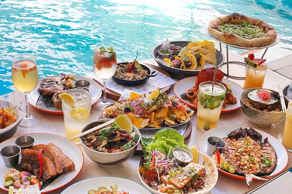

자유여행 강의 - 추천먹거리

자유여행 추천 먹거리 특징 및 팁
현지 로컬 맛집
- Smoke Resto - 저렴하고 맛있는 필리핀 현지 음식 제공
- Kolai Mangyan - 필리핀 전통 바비큐와 그릴 요리 추천
- I Love Backyard BBQ - 가성비 좋은 바베큐 전문점
추천 길거리 음식
- Chicken Inasal - 필리핀식 숯불 닭구이
- Taho - 따뜻한 두부 디저트, 거리에서 쉽게 찾을 수 있음
- Halo-Halo - 다양한 토핑이 들어간 필리핀 대표 빙수
음식점 이용 팁
- 로컬 식당은 현금 결제만 가능할 수 있으므로 페소 준비
- 식사 시간 피크 때는 대기 시간이 길어질 수 있음
- 길거리 음식 위생 상태 확인 후 구매 추천